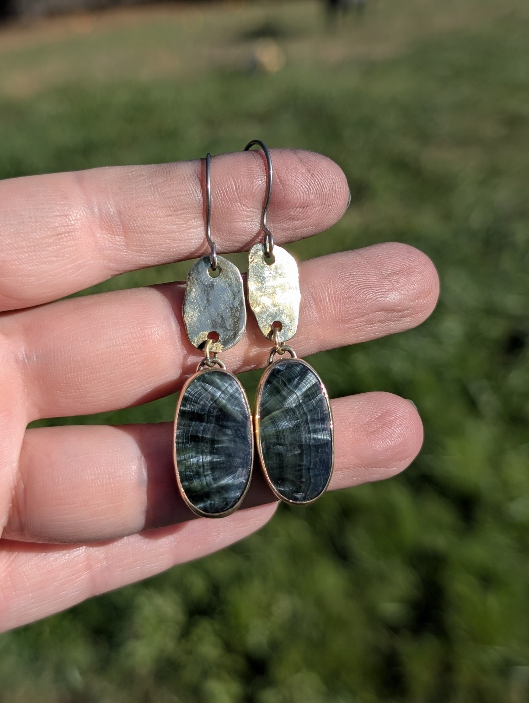
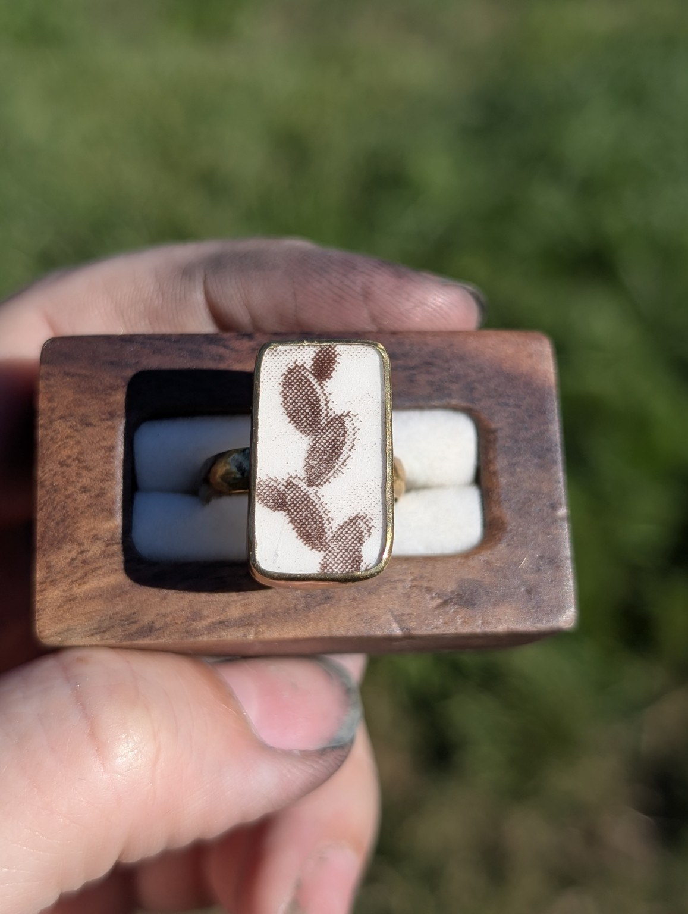
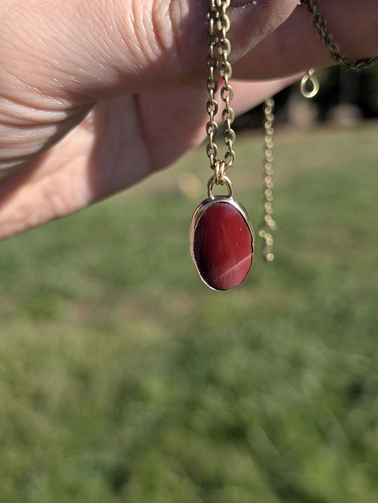
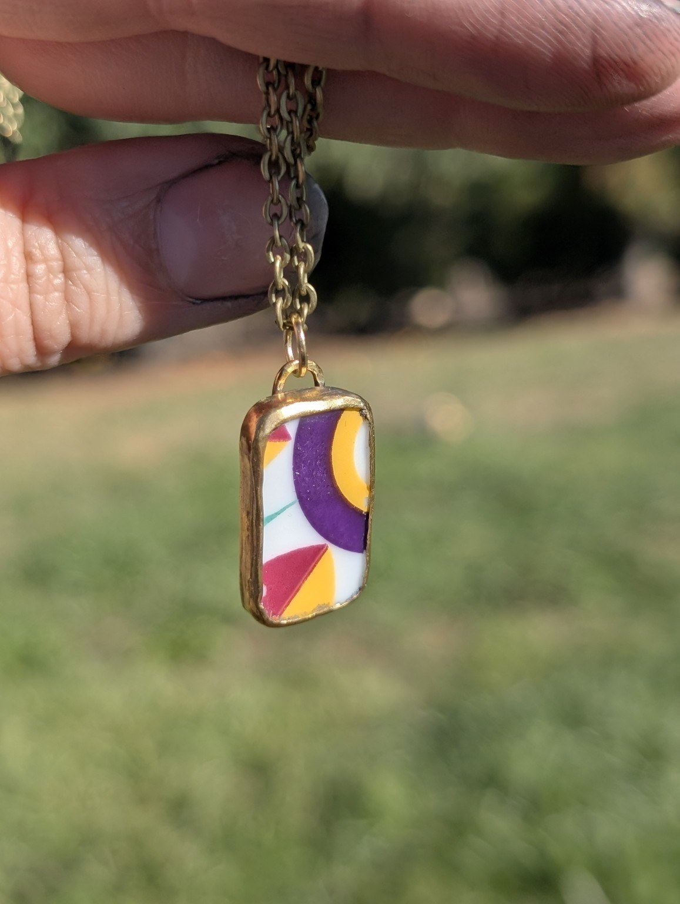
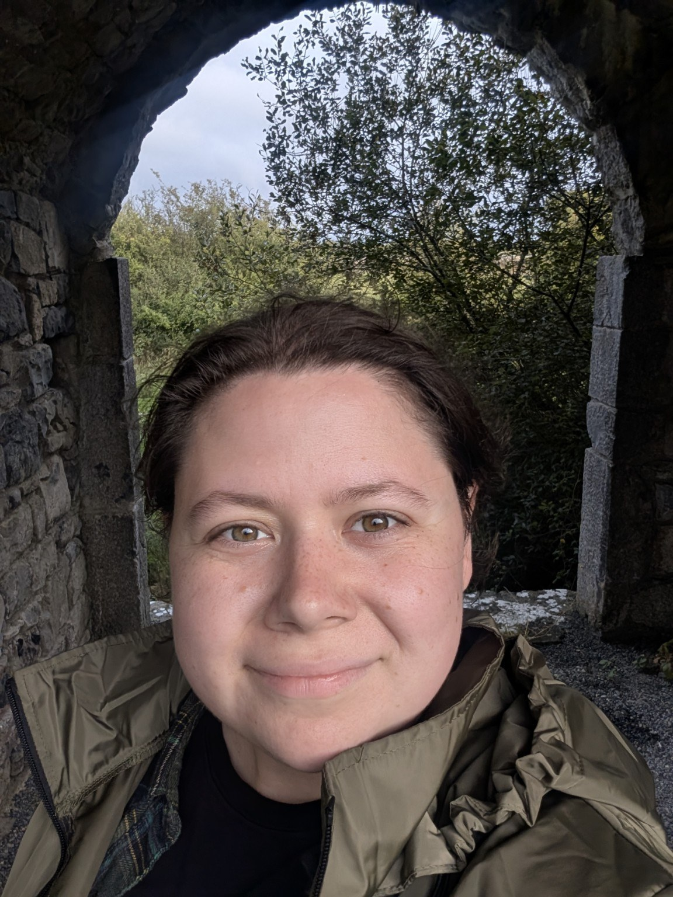

Organic textures, unexpected patterns, and pieces that feel a little like finding a treasure.
Reclaimed china pendant
Bull illustration on reclaimed china, set in brass.

Stone & hammered metal earrings
Dark oval stones with hammered metal links and niobium hooks.

Cactus china ring
Rectangular reclaimed china with a brown cactus design.

Deep red pendant
Deep red oval cabochon in a handmade metal setting.

Colorful china pendant
Reclaimed china with purple, yellow, and red shapes, set in brass.
Made the slow way
A little patience. A lot of heart.
Cut, shaped, soldered, hammered, filed, set, and finished by hand. I work with brass, copper, natural stones, and reclaimed china, letting each material’s character guide the piece.
Small variations and organic textures are part of the story—jewelry made to be lived in and loved.

Meet the maker
Hi, I’m Jacquline.
I’m the hands behind The Olive Feather Co. I make each piece in my small home studio in Oregon, drawn to natural textures, old patterns, and materials with a story.
I make jewelry for people who appreciate beautiful things that don’t need to be perfect to be special.